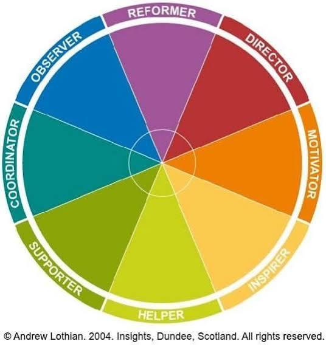

Een digitale afbeelding bestaat uit heel veel kleine vierkantjes: pixels. Het woord pixel komt van picture element. Als je heel ver inzoomt op een foto, kun je de losse pixels zien.
Elke pixel op een beeldscherm bestaat uit 3 lampjes: rood, groen en blauw. Door die lampjes feller of zwakker te laten branden, maak je alle andere kleuren. Het RGB-model begint met een zwarte achtergrond: als alle lampjes uit staan, is het scherm zwart. Alle lampjes vol aan geeft wit.
| Kleur 1 | Kleur 2 | Kleur 3 | Nieuwe kleur |
|---|---|---|---|
| - | - | - | Zwart |
| Rood | Groen | Blauw | Wit |
| Rood | Groen | - | Geel |
| Rood | Blauw | - | Paars |
| Blauw | Groen | - | Turquoise |
Een computer kan niet werken met "een beetje rood". Daarom krijgt elk lampje een getal van 0 tot en met 255. Dat komt doordat elke kleur 1 byte gebruikt: 8 bits, en 28 = 256 mogelijkheden. Geel is bijvoorbeeld (255, 255, 0): rood vol aan, groen vol aan, blauw uit.
Op websites schrijf je kleuren vaak in hexadecimaal (16-tallig). Hexadecimaal heeft 16 cijfers: 0 tot en met 9 en daarna A tot en met F (A = 10, F = 15). Elke kleur krijgt dan 2 tekens. 255 wordt FF, en 0 wordt 00.
Voorbeeld: de oranje kleur van mijn website is rood = 242. 242 ÷ 16 = 15 met een rest van 2. 15 = F, dus 242 = F2.
| Kleur | Naam | Decimaal (R, G, B) | Hexadecimaal |
|---|---|---|---|
| Rood | 255, 0, 0 | #FF0000 | |
| Groen | 0, 255, 0 | #00FF00 | |
| Blauw | 0, 0, 255 | #0000FF | |
| Geel | 255, 255, 0 | #FFFF00 | |
| Oranje (mijn site) | 242, 140, 40 | #F28C28 | |
| Donkerblauw (mijn site) | 11, 37, 69 | #0B2545 | |
| Middenblauw (mijn site) | 29, 78, 137 | #1D4E89 |
Papier is wit en geeft zelf geen licht. Een printer kan dus geen lampjes gebruiken, maar gebruikt inkt. Daarom is er het CMY-model: cyaan, magenta en yellow (geel). Hier begin je met een witte achtergrond en voeg je kleur toe met inkt.
Cyaan, magenta en geel samen geven geen mooi zwart, maar donkergrijs. Ook wordt het papier dan heel nat. Daarom heeft een printer ook nog zwarte inkt. Zo ontstaat het CMYK-model: de K staat voor key (zwart).
Om van RGB naar CMY te rekenen gebruik je deze formule: CMY = (255 − R, 255 − G, 255 − B). Voorbeeld: oranje is RGB (255, 128, 0). In CMY wordt dat (255 − 255, 255 − 128, 255 − 0) = (0, 127, 255).
